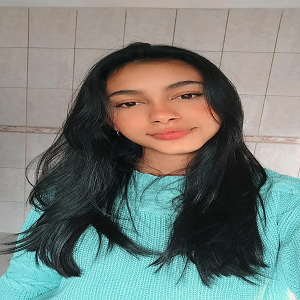

Sobre Alanis Mayra:
Sou uma Desenvolvedora FullStack Java Jr. formada pela Generation Brasil, onde tive a oportunidade de aprender e aplicar meus conhecimentos em React, HTML, Java, Spring, CSS, MySQL, JavaScript, Git, GitHub e TypeScript através do Projeto Integrador. Além de dominar metodologias ágeis, como o Scrum, também desenvolvi habilidades essenciais, como trabalho em equipe, proatividade, comunicação e empatia. Minha paixão pela tecnologia é o que me impulsiona a buscar constantemente novos conhecimentos e aprimorar minhas competências. Estou em busca de uma oportunidade, onde eu possa continuar meu desenvolvimento e aplicar todo o conhecimento adquirido.
